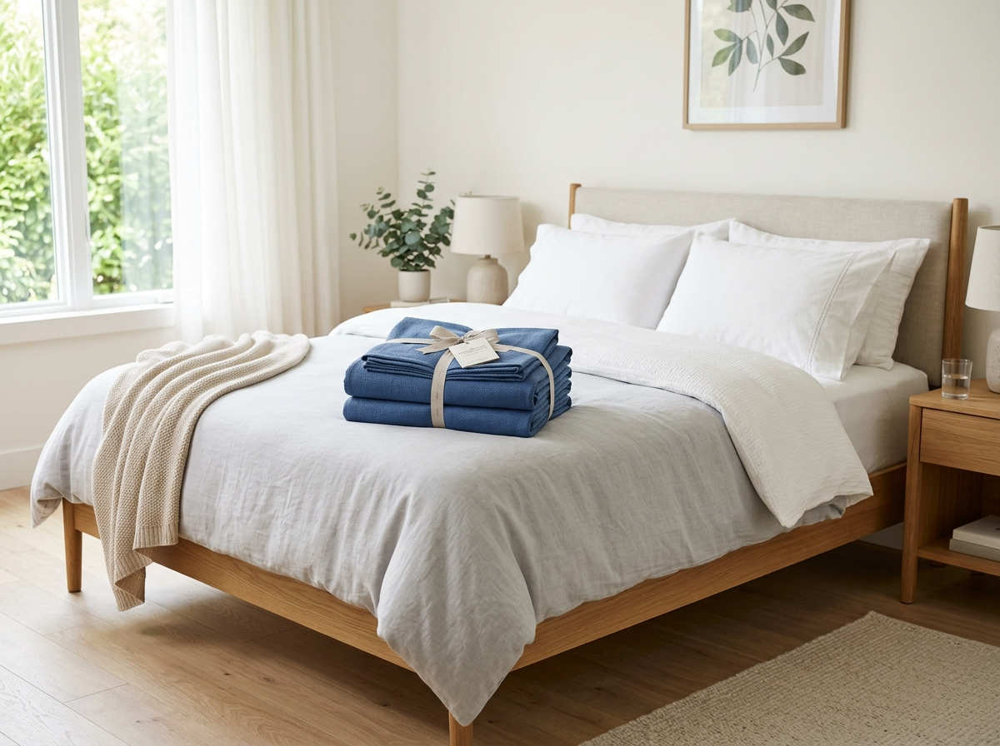
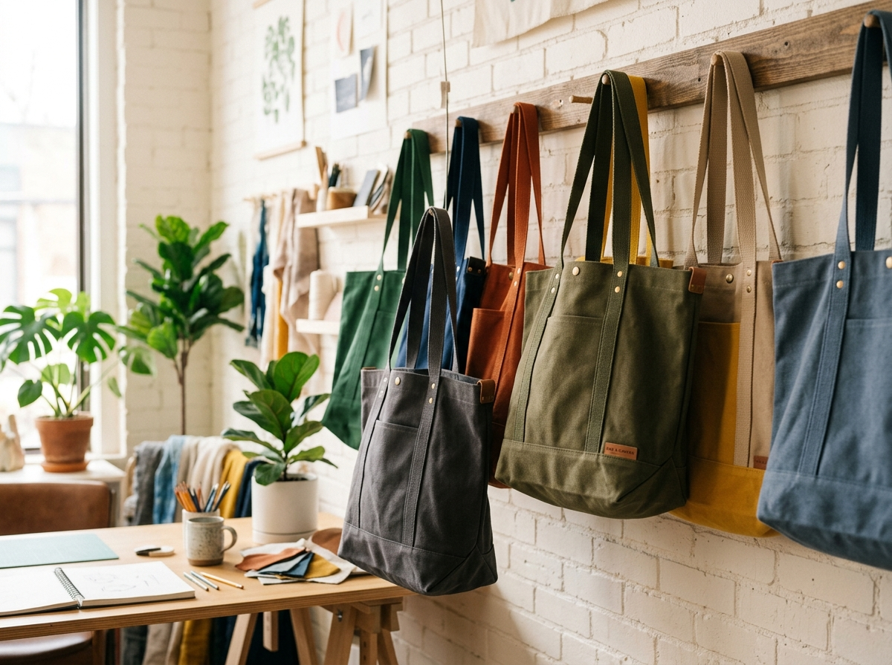
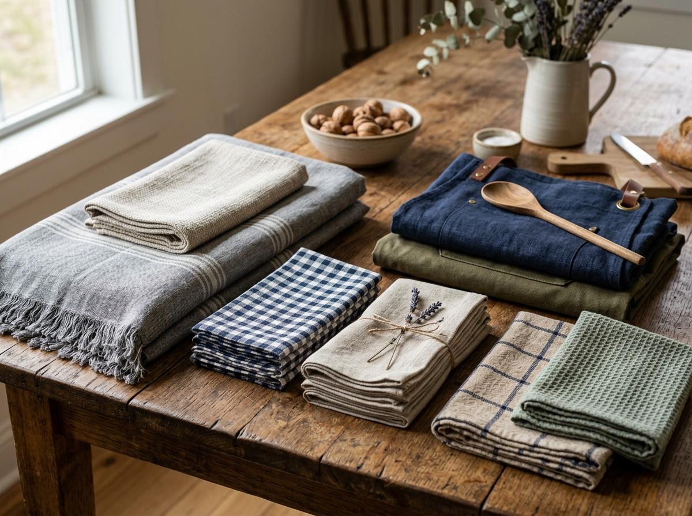

Woven Textile Applications
Specialized processing for fabrics intended for home textiles and export merchandise.

Bedsheets & Bed Linens
Processing wide-width woven cotton and blended fabrics for export-grade bed sheets. Ensuring softness, exact shade matching, and controlled shrinkage suitable for home textiles.

Tote & Carrier Bags
Durable solid dyeing and precision printing for woven fabrics used in reusable bags, ensuring high color fastness even under heavy use.

Kitchen & Table Linens
Handling fabrics for aprons, tablecloths, and napkins with processing that guarantees resistance to frequent industrial and domestic washing.
Have a different application?
Our technical team can assess your specific fabric and end-use requirements to determine the most suitable processing methods.
Discuss Your ApplicationRequest a Processing Quote
Submit your technical specifications for an accurate technical assessment and quotation.
Submit Specifications